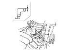
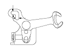
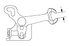

M/T Reverse Shift Fork Clearance Inspection
Measure the clearance between the reverse shift fork (A) and 5th/reverse shift piece pin (B). If the clearance exceeds the service limit, go to
Step 2
.
Standard:
A:
0.05−0.35 mm (0.002−0.014 in.)
B:
0.4−0.8 mm (0.02−0.03 in.)
Service Limit:
A:
0.5 mm (0.02 in.)
B:
1.0 mm (0.04 in.)

Measure the widths of the groove in the reverse shift fork.
If the widths are not within the standard, replace the reverse shift fork.
If the widths are within the standard, replace the 5th/reverse shift piece.
Standard:
A:
7.05−7.25 mm (0.278−0.285 in.)
B:
7.4−7.7 mm (0.29−0.30 in.)

Measure the clearance between the reverse idler gear (A) and reverse shift fork (B). If the clearance exceeds the service limit, go to
Step 4
.
Standard:
0.5−1.1 mm (0.02−0.04 in.)
Service Limit:
1.8 mm (0.07 in.)
Measure the widths of the reverse shift fork.
If the width is not within the standard, replace the reverse shift fork.
If the width is within the standard, replace the reverse idler gear.
Standard:
13.0−13.3 mm (0.51−0.52 in.)
